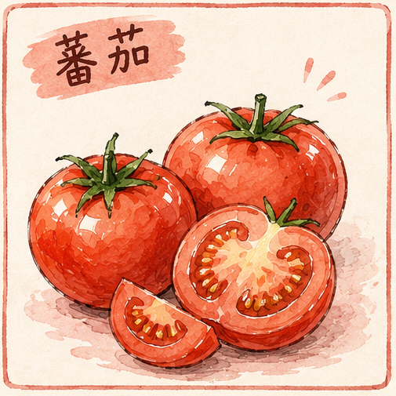
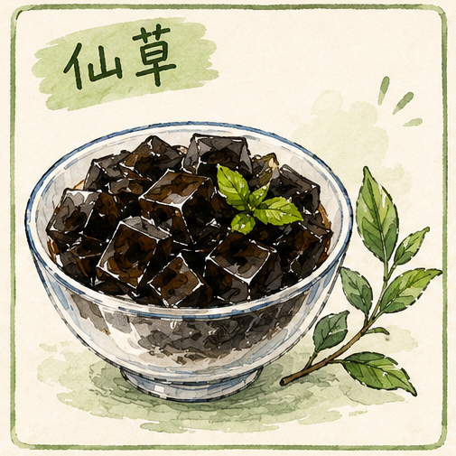
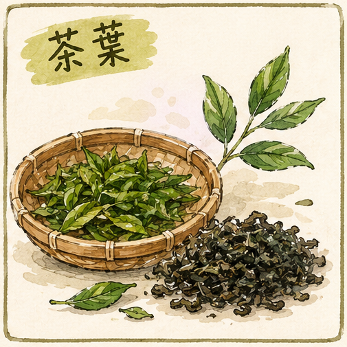
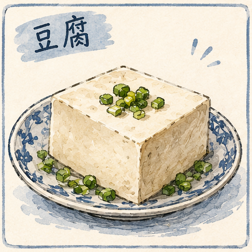
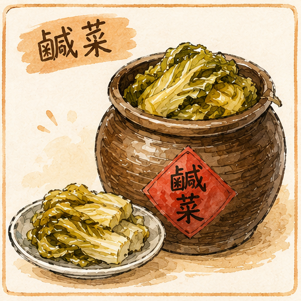

六大主題
從一顆番茄，到一甕鹹菜
點選圖卡，進入各年級的課程網。每一門課都在關西鎮找得到現場：田裡、店裡、工廠裡，還有阿婆的灶下。
-

一年級酸甜「蕃」新花樣
番茄從認識番茄王國開始，剖開果實找秘密，打一杯番茄汁，再和同組同學想出一道創意料理。
- 12 節
- 番茄王國
- 番茄大秘密
- 番茄好滋味
- 創意料理
- 繪本閱讀
進入課程網→ -

二年級蜜甜仙草甜蜜蜜
仙草聽仙草的傳說，認識它為什麼長在關西，親手熬一碗仙草蜜，再用客語唱一首「仙草歌」。
- 10 節
- 仙境傳說
- 仙履奇緣
- 穠仙和度
- 仙草行動派
- 繪本閱讀
進入課程網→ -

三年級回甘「茶」顏觀色
茶走進台灣紅茶工廠，看百年製茶的步驟，比較酸柑茶、炭焙烏龍與蜜香紅茶，再設計一張奉茶海報。
- 20 節
- 茶葉物語
- 茶葉風華
- 話·畫茶
- 傳承好味道
- 閱讀·喜閱網
進入課程網→ -
 四年級清淡
四年級清淡腐腐生豐
豆腐用客語說出家裡的豆腐料理，比較速食與慢食的差別，練習惜食與分享，最後設計一桌「幸福豆腐餐」。
- 20 節
- 豆腐哪位來
- 慢食豆腐
- 惜食豆腐
- 豆腐幸福學
- 閱讀·喜閱網
進入課程網→ -

五年級鹹香醬香蔭油
醬油到台三線的李記醬油工廠踏查，分辨純釀造與化學醬油，設計伴手禮盒，再用客語介紹自己的醬香料理。
- 20 節
- 醬油廠大觀園
- 醬油面面觀
- 醬心獨具
- 閱讀·就是「醬」子
進入課程網→ -

六年級鹹酸「鹹」情逸致
鹹菜從鹹菜甕的由來查起，種一畦芥菜、看它變身，做出鹹菜料理，最後完成一份自己的鹹菜專題報告。
- 20 節
- 鹹菜甕由來
- 芥菜成長記
- 芥菜變身
- 好食鹹菜料理
- 專題報告
- 閱讀課程
進入課程網→
六年一貫
六年，是一條味覺的光譜
課程的順序不是隨機排的。從孩子最容易接受的酸甜開始，慢慢走向需要時間與經驗才嚐得懂的鹹與甘——味道愈陳，探究的方式也愈深。
- 一年級酸甜番茄 · 現採即食
- 二年級蜜甜仙草 · 熬煮成凍
- 三年級回甘茶 · 揉捻烘焙
- 四年級清淡豆腐 · 磨漿凝固
- 五年級鹹香醬油 · 日曬熟成
- 六年級鹹酸鹹菜 · 入甕發酵
課程架構圖
一年級 · 「蕃」新花樣 二年級 · 仙草甜蜜蜜 三年級 · 「茶」顏觀色 四年級 · 腐腐生豐 五年級 · 醬香蔭油 六年級 · 「鹹」情逸致
點縮圖看大圖，可用 ← → 換頁、Esc 關閉。
課程主軸
兩條線，貫穿六個主題
六門課的食材不同，但每一門都同時走在這兩條線上：用客語說家鄉的味道，用閱讀與寫作把體會留下來。
客語融入
從低年級的聽力識別，到高年級的口語發表與文化理解，客語的使用一年一年往上疊。
- 一、二年級：聽懂並跟說飲食生活用語
- 三、四年級：用客語介紹家裡的料理
- 五、六年級：以客語發表自己設計的菜色與專題
閱讀課程
每個主題都留兩節以上的閱讀課，從繪本共讀走到策略閱讀與心智圖整理。
- 繪本共讀：《愛吃水果的牛》《爺爺的神祕菜園》《福爾摩沙。茶》《奉茶》
- 閱讀策略：標註重點、摘要、自我提問與推論
- 成果產出：學習小書、日記、心智圖、專題報告